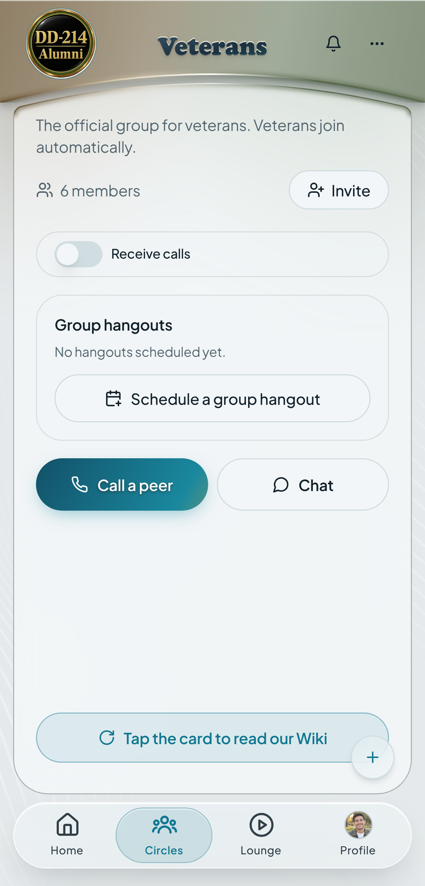
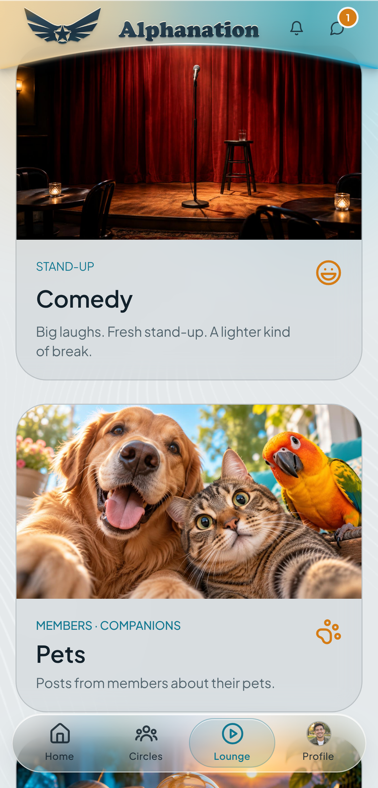

Connect
Make the first step easier
One tap rings every available peer

- Problem
- Choosing exactly who to call adds friction at the moment reaching out is hardest.
- Options considered
- Call one chosen person; broadcast to everyone; or send one request to people who agreed to receive it.
- Decision
- One request goes to eligible, opted-in peers, and the first available person answers. Agreeing to receive requests is separate from joining a circle.
- What I built
- Per-circle availability, the request flow and live voice calls, tested end to end.
- Still open
- How quickly requests get answered as more members join, and what helps most when nobody is free.
Circles
Give groups a say in how they run
Inside a circle: calls, chat, hangouts and its wiki

- Problem
- In most group apps the founder holds all the power, even after the group outgrows them.
- Options considered
- A single admin; appointed moderators; or members electing a council.
- Decision
- Once a circle reaches 10 members it can adopt a charter and elect leads who act as its administrators. Members suggest wiki edits for the group to review.
- What I built
- Circle charters, council elections and a shared wiki with edit review.
- Still open
- Edge cases across an election, and how to prevent abuse of votes and edits.
Home & Lounge
Give new members a place to start
Lounge channels, such as Comedy

- Problem
- A brand-new network has an empty feed, so there is no reason to come back.
- Options considered
- A global public feed; algorithmic discovery; or curated channels and daily prompts alongside circle posts.
- Decision
- Home mixes circle activity with curated channels and a Daily Question. The Lounge lets people browse by interest.
- What I built
- Lounge channels such as Good News, Sports and Fun Facts, the Daily Question, Daily Code Word and game rankings.
- Still open
- Whether this brings people back, and how to keep curated content relevant without crowding out circle posts.